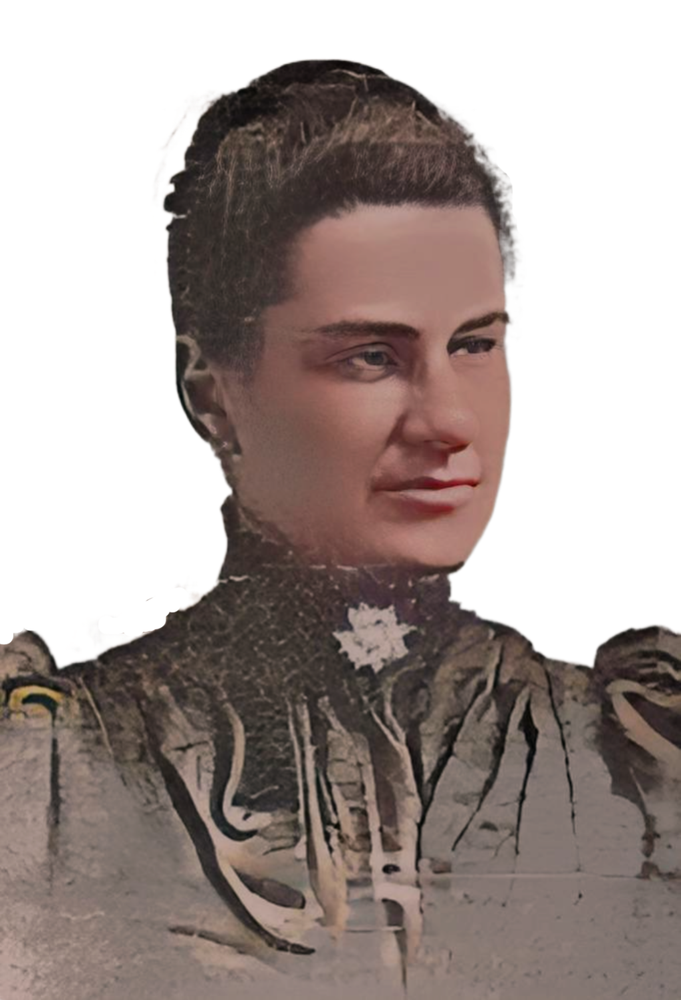

Minneapolis, Minnesota's 2nd Female Physician
In 1890, when Mary arrived in Minneapolis, Minnesota, she was the second woman doctor in the city. She was part of the pediatric medical staff at the Asbury Hospital when it opened in 1892.
Asbury Methodist Hospital, founded in Minneapolis, MN in 1892 with 32 beds. In 1952, the hospital would relocate to St. Louis Park, MN and become the Methodist Hospital. Today, it is Park Nicolet Methodist.
Learn more about Asbury Hospital in the article, Sarah Harrison Knight: Broader and Grander Work.
The Walkers: One of Minnesota's Power Couples
Thomas Barlow Walker was an American business magnate who acquired lumber in Minnesota and California. By 1923, he was among the ten wealthiest men in the world. He also became a prominent art collector founding the Walker Art Center as well as the Minneapolis Public Library. Thomas lived in Minneapolis with and his wife, Harriet, and their 8 children.Harriet Granger Walker was a powerful woman in her own right. She was
- President of Northwestern Hospital from 1862 to 1917
- President of the Bethany Home, known today as the Walker Methodist Home
- Member of the Women's Council of the City of Minneapolis
- Member of the Hennepin Avenue Methodist Church
- Member of the Nonpartisan National Women's Christian Temperance Union
- Member ofthe Minneapolis Association Opposed to the Further Extension of Suffrage to Women
Mrs. Walker decided that these women could come up with the money to build a charity hospital for the poorest women and children in Minneapolis. And that’s exactly what they did.
Northwestern Hospital for Women and Children
One month later, the Northwestern Hospital for Women and Children opened in a rented house on Three and a Half Avenue South. Within a year, they put a down-payment on a bigger house and filed articles of incorporation. By 1887 the hospital had built a permanent home on the corner of Chicago and 27th Street with Doctors Hood and Whetstone as the hospital's physicians.
Hood and Whetstone used diet, cleanliness, and rest to cure their patients. According to Dr. Hood,
"...we depend largely upon nursing to sustain the vital forces...and so help nature to gain the victory. In many severe cases our good nursing has come to the rescue; frequent bathing and clean linen, good nourishing food given regularly, and the quiet rest induced by the confidence of good care are the secrets of our successful issues."
This was often enough to help these tired, poor, half-starved women and children, to recuperate from whatever illness they had.
Today, Northwestern Hospital for Women and Children is Abbott Northwestern Hospital of Allina Health.
